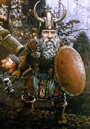

SVIRFNEBLI

Свирфы пришли в этот мир после того, как был найден путь в Underdark.
Более крупные, чем их родичи с поверхности земли. Века, проведенные в
подземельях за рвботой с камнем сделали свирфов сильнее и крепче.
Преданность камням не сделала из них больших интеллектуалов, но тем не менее
они очень мудры. В силу своей исключительной преданности камню, свирфы долны
быть нейтральны во всех ситуациях. Они имеют те же способности в постижении
силы предметов, что и их родичи с поверхности.
Базовый экспириенсдля Свирфов:
Witch = 1250 Cleric = 1250 Thief = 1250 Warrior = 1250
Warlock = 1450